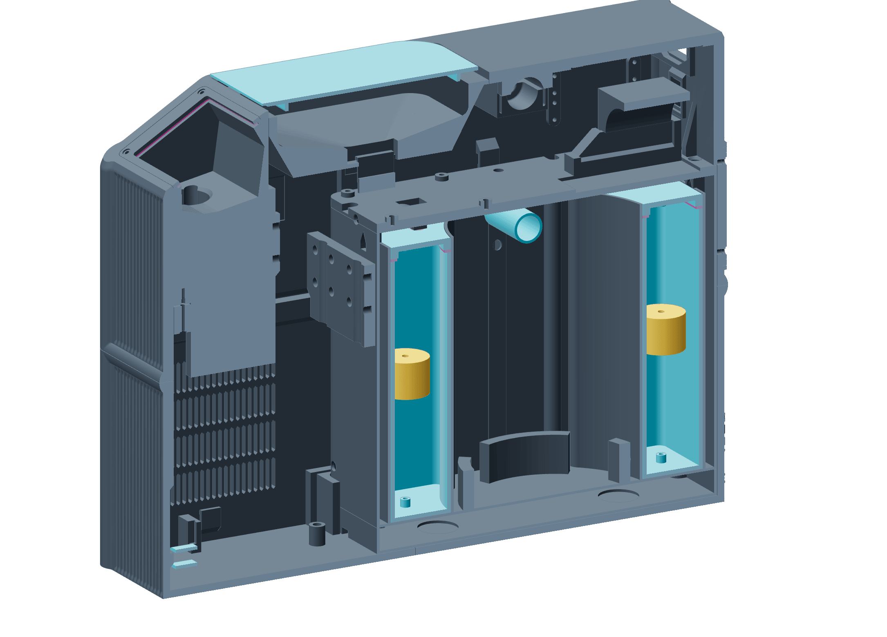

The machine
Four plastics, each doing one job.
The machine cut in half, with every printed part coloured by the plastic it is made of. Which plastic a part gets was decided by what the part has to do.

PET-GF · ENCLOSUREPET-GF · COLD CORE SHELLPETG · RESERVOIRSPETG · FUNNEL COVERASA AERO · FLOATSTPU · CAP GASKETS AND TUBE GRIPSBOUGHT PARTS, TUBES AND WIRING ARE HIDDEN
THE FAUCET, ALSO PET-GF, STANDS ON THE COUNTER ABOVE
| PET-GF | Everything stiff and everything you see. | The four enclosure quadrants, the cold core’s shell and caps, the faucet, the funnel frame, the snap caps, rings and labels. |
|---|---|---|
| PETG | Whatever holds liquid, and a few small parts. | Both flavor reservoirs and their caps, the funnel cover, the status plate, a shroud, a bridge and a clamp. The mold for the silicone funnel. |
| TPU | Whatever has to stretch or seal. | Reservoir cap gaskets, tube grips, the display gasket, the drain adapter, and the pump elbows in development. |
| ASA Aero | The one part that has to float. | Three level floats, each printed around a magnet. |
| PET-CF | Nothing now. | The faucet’s first attempts, in the spring. |